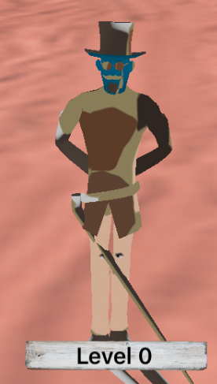
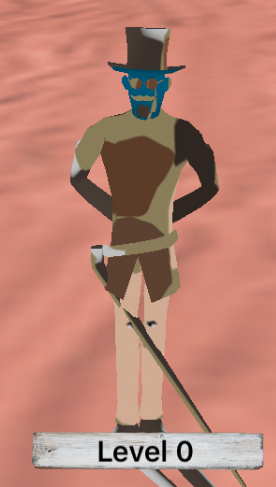

matalink
Why is my object looking like this? It’s ok on blender but when import to my game it looks like it have this weird line stretching from its holster. I am newbie by the way.


Why is my object looking like this? It’s ok on blender but when import to my game it looks like it have this weird line stretching from its holster. I am newbie by the way.


Hey man, I see more stretching at the feet.
This looks like a skin weight problem, which implies there are bones in your model, but for some reason not all the vertices have proper bone weights. Could be an exporter bug.
How did you export your blender object?
Personally, I export from blender to fbx, then use urho’s AssetImporter tool to convert the fbx to urho files. I never had a problem like this yet.

Which compiler are you using (probably gcc 8) and which engine version are you using (probably 1.7). What process have you used. And a bit more detail in general is required. Not just WHY?.
NVM: I just noticed it says C#
 did you export your models using Urho3D-Blender? that thing seems to be with a lota serious problems.
did you export your models using Urho3D-Blender? that thing seems to be with a lota serious problems.
I suggest for now export modesl as FBX format and then import using Urho3D’s AssetImporter.

@Virgo There’s now also:
And @reattiva’s branch still works fine with Blender 2.79.
Looks like either UVs are upside-down or materials are mismatched if it’s a multi-part model. Betting on UVs being upside down.
Blender uses GL-nonsense load textures from bottom-left and upwards in rows for texture data, if he did something like Blender -> Collada -> AssimpConverter it could easily come out like this.
Not sure what stretched geometry has to do with bad UVs… imho uv coords should only affect appearance of geometry, not contribute to shape deformation. Bad skin weights on the other hand, could certainly do this.
@Leith I’m just reffering to the texture issues, no clue what the geometry issues are and I don’t care, nor should anyone really. The texture issues have to be sorted out first.